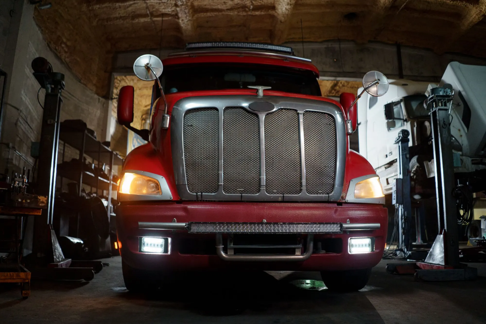
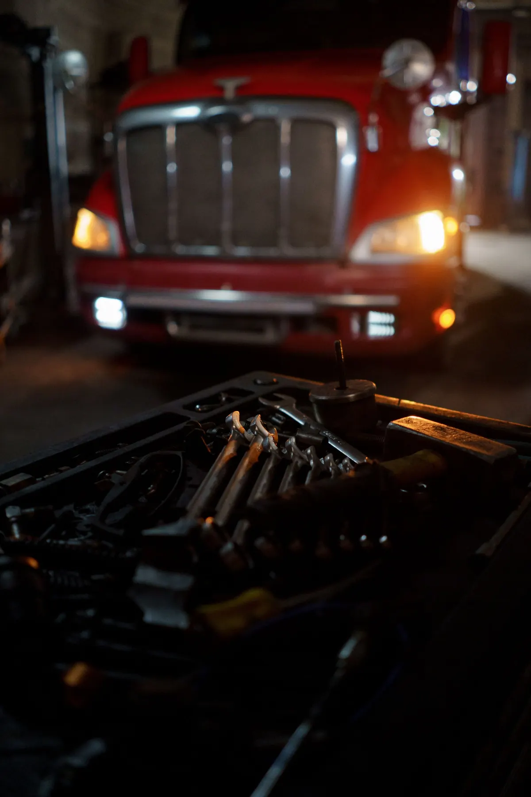
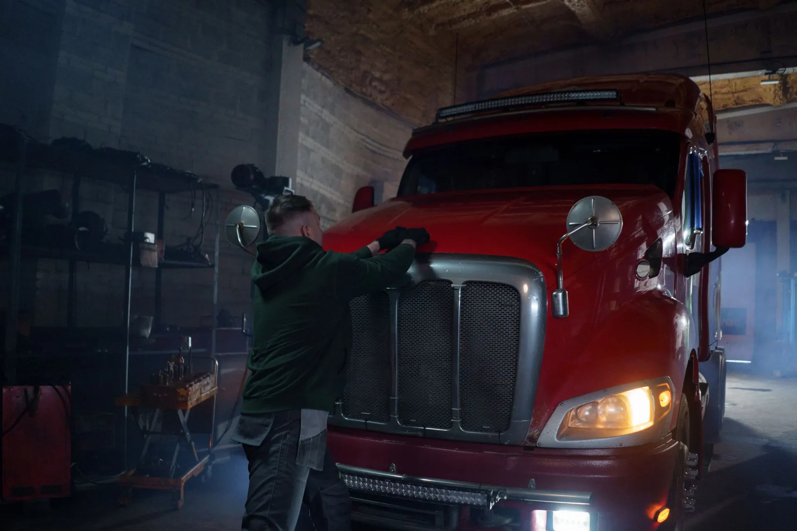

C·01
Fabricación de instalaciones
Armamos la instalación completa o por tramos —motor, chasis, cabina y acoplado— con la sección de cable y las fichas que pide cada circuito.
Consultar este trabajoTransporte pesado12 V y 24 V
Mazos a medida, reparación de instalaciones, luces y diagnóstico eléctrico para camiones y utilitarios.
Trabajamos sobre Iveco, Mercedes-Benz, Scania, Volvo, Ford y equipos CAT.

Servicios
Cuatro trabajos, un mismo criterio: cada cable con su sección, su ficha y su fusible.
C·01
Armamos la instalación completa o por tramos —motor, chasis, cabina y acoplado— con la sección de cable y las fichas que pide cada circuito.
Consultar este trabajoC·02
Cables cortados, fichas sulfatadas, empalmes que recalientan: ubicamos el tramo dañado y lo rehacemos.
Consultar este trabajoC·03
Faros, giros, balizas, luces de posición y de acoplado: instalación, conexión y prueba de cada una.
Consultar este trabajoC·04
Arranque, carga, consumos que descargan la batería y fallas intermitentes: medimos antes de cambiar nada.
Consultar este trabajoGalería de trabajos
Fotos ilustrativas. Tocá una para verla grande.

Cómo trabajamos
Por WhatsApp: marca, modelo, año y la falla. Una foto o un video ayudan.
Medimos el circuito con la unidad en el taller y ubicamos la falla.
Te pasamos qué hay que hacer y cuánto sale. Arrancamos con tu OK.
Probamos luces, arranque y carga antes de que el camión vuelva a la ruta.
Horario de atención
Horario del taller
Lunes a viernes de 8 a 18 h y sábados de 8 a 13 h.
Fuera de horario podés escribir igual: te respondemos en horario de taller.
Consulta
¿Qué trabajo necesitás?
Elegí un tipo de trabajo para armar el mensaje.
Así nos llega tu mensaje
¡Hola ELECTRITRUCK! Quiero consultar por la instalación eléctrica de mi camión.
Preguntas frecuentes
Sí: utilitarios de 12 V, como la Iveco Daily, y camiones de 24 V.
Las dos cosas: el mazo completo o el tramo que haga falta, sea de motor, chasis, cabina o acoplado.
Depende de la unidad y de lo que haya que hacer. Con el diagnóstico te decimos el plazo antes de empezar.
Sí, por WhatsApp. Con fotos o un video de la falla te orientamos y coordinamos el día para traerlo.

Mandanos marca, modelo y la falla por WhatsApp y coordinamos el diagnóstico.
11 2610-9620
Fabricación
Cables agrupados por circuito, antes de colocar terminales y fichas.
Consultar este trabajo